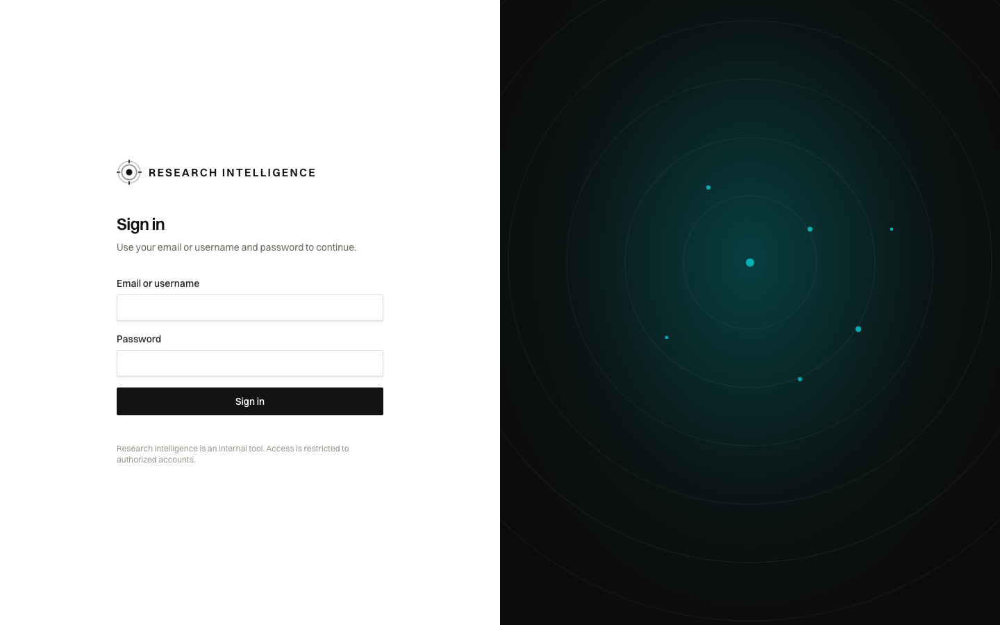
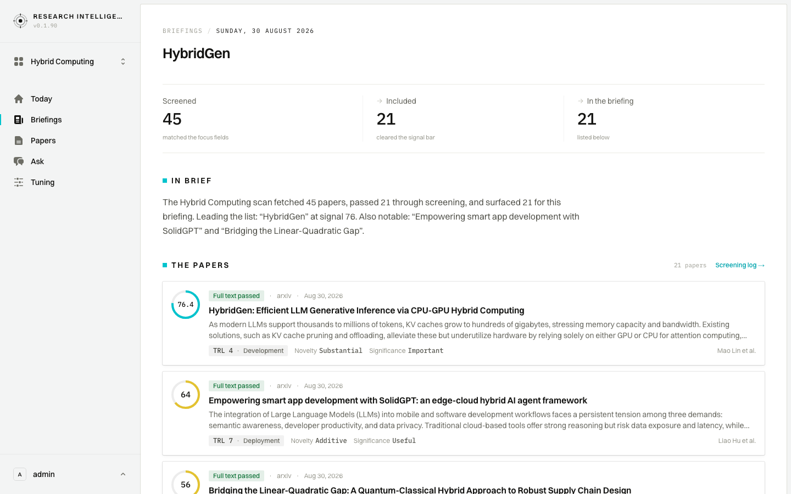
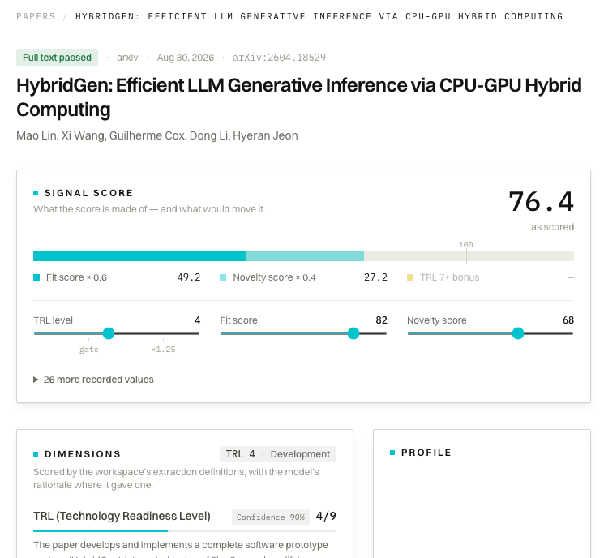

Executive
Two minutes before the first meeting: what moved overnight, and why.
Wants a two-minute morning briefing; will never open a filter
1 · Sign in

- Sees
- One sign-in panel on the left — Research Intelligence, a field for an email or username, a field for a password, and a line saying access is restricted to authorized accounts. The right half of the screen is a dark panel carrying the product's radar motif; there is nothing to act on there.
- Does
- Signs in with the work account; nothing else on the page asks for input.
- Decides
- Nothing to weigh here — the two minutes start on the other side.
2 · Today

- Sees
- Today, 30 August, in the Hybrid Computing workspace: 45 papers screened against the focus fields, 21 cleared the signal bar, 21 carried into the briefing. Underneath, a short brief names HybridGen at signal 76 as the leader, with SolidGPT and “Bridging the Linear-Quadratic Gap” behind it, over a line saying it was assembled automatically from this run.
- Does
- Reads the three counts and the brief, and leaves the sort controls under The papers untouched.
- Decides
- One overnight run with one candidate worth naming aloud — worth thirty more seconds before the meeting.
3 · Open the briefing

Clip · 6 s — the move from Today to the briefing edition
- Sees
- The edition for Sunday, 30 August, headed HybridGen: the same three counts, the brief in full, and 21 papers ranked by signal — HybridGen at 76.4 ahead of SolidGPT at 64 and the supply-chain paper at 56.
- Does
- Skims the top of the ranked list — the first two cards in full, each with its screening decision, source, date and readiness level; the third is cut at the fold, its score, decision, source and date in view and its headline cut off at the bottom of the screen.
- Decides
- The gap between first and second is wide enough that the day has one story, not three.
4 · Glance at the top paper

- Sees
- HybridGen's own page: full text passed, from arXiv, dated 30 August, a signal score of 76.4, and a line stating what the score is made of and what would move it. The dimensions start directly beneath, opening at readiness level (TRL) 4 of 9 — development — with the reasoning beginning in plain sentences and running on past the edge of the frame.
- Does
- Reads the number and the first stretch of reasoning, and stops there rather than scrolling into the evidence quotes and the abstract.
- Decides
- Solid enough to carry into the meeting as a single sentence, with the detail left to the platform team.
Caveats
- Every screen here comes from one recorded morning. “Today” is always Sunday, 30 August 2026, and the three counts — 45 screened, 21 cleared, 21 carried into the briefing — are identical in every frame.
- The counts, the brief and the top paper all belong to the Hybrid Computing workspace. A session that opens on a different workspace shows a different corpus and different numbers.
- The greeting on Today carries the signed-in account's name; here that reads admin, an internal account, so it reads differently in daily use.
- The brief is composed from the run's own numbers and titles, not written prose. Today says so plainly, stamping the brief “Assembled automatically from this run.” The briefing edition carries the same brief without that line.
- The Schwarz Fit part of the reasoning — the part an executive would most want — sits further down the page and is not on the unscrolled screen.
- Beside the reasoning sits a panel labelled Profile. Its chart is far down a card as tall as the reasoning column, so on a screen this height the panel reads as empty. Nothing is missing — the chart is simply below the fold — but the label arrives long before anything it labels.